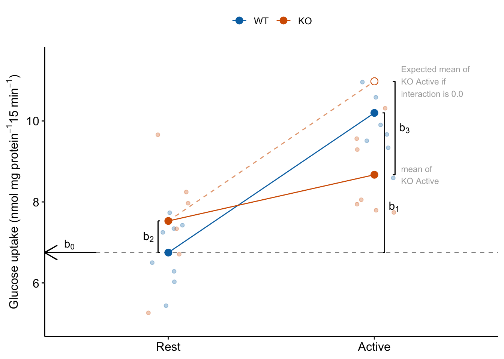
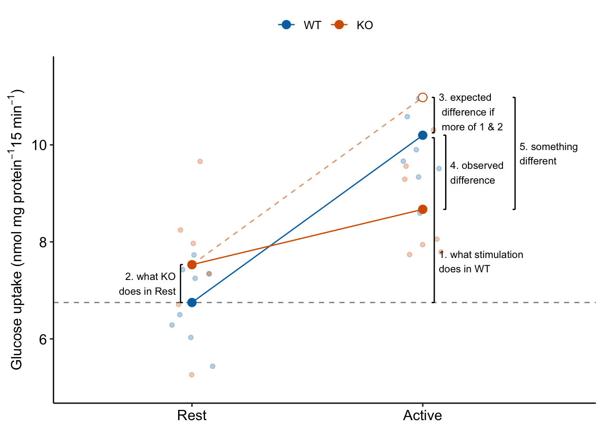
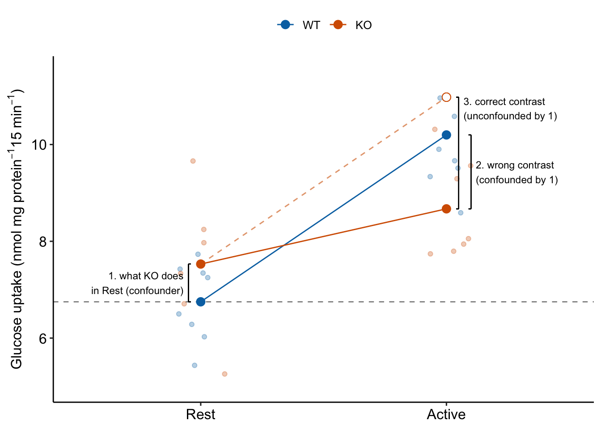
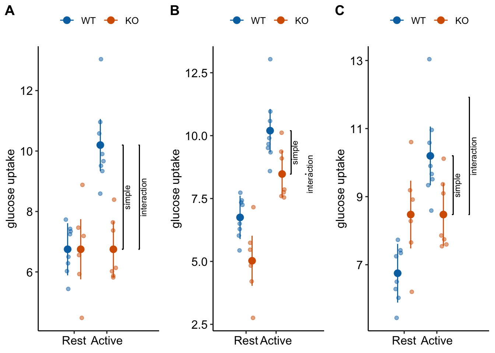
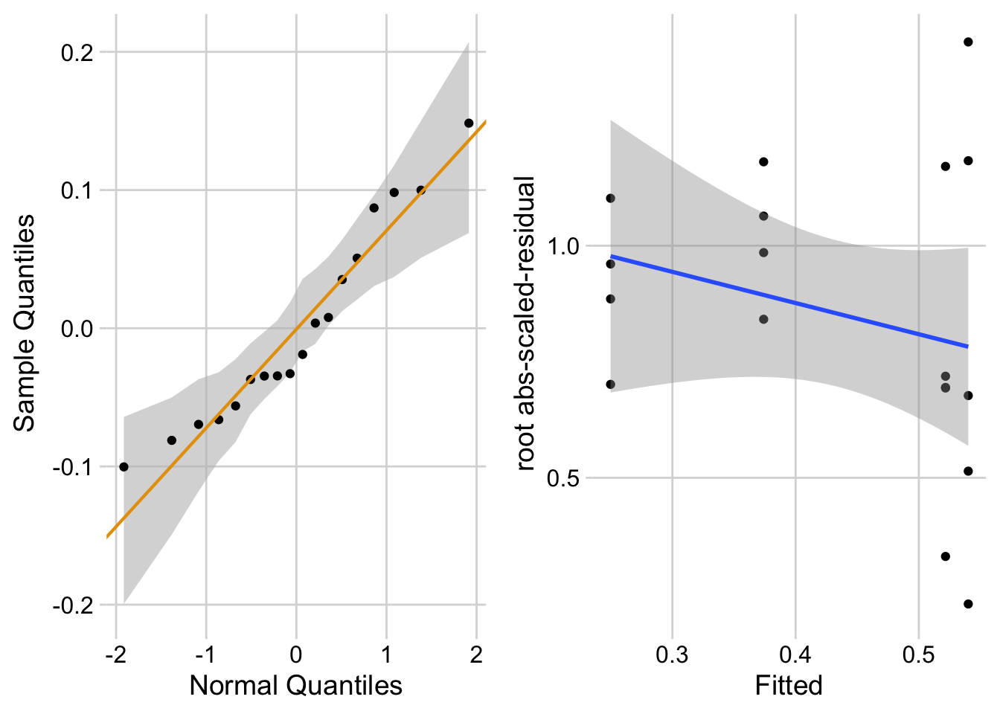
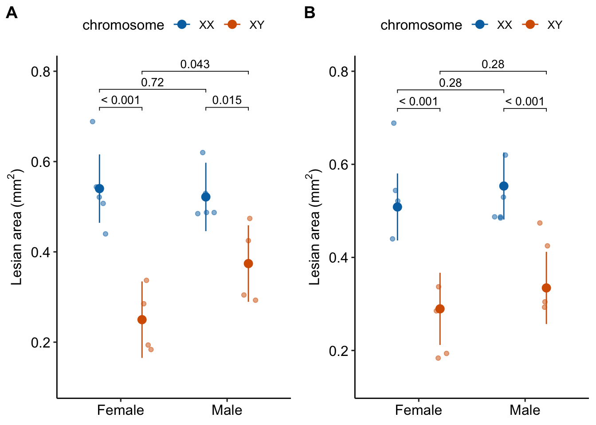
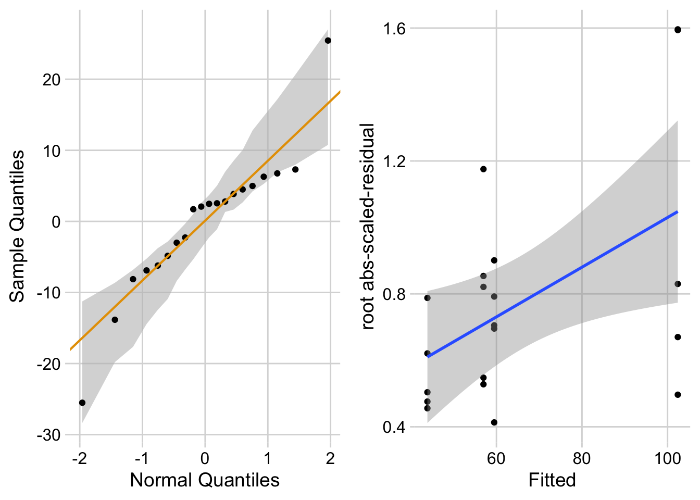
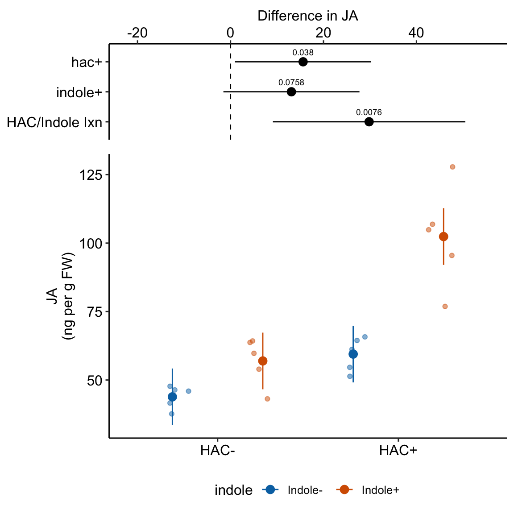
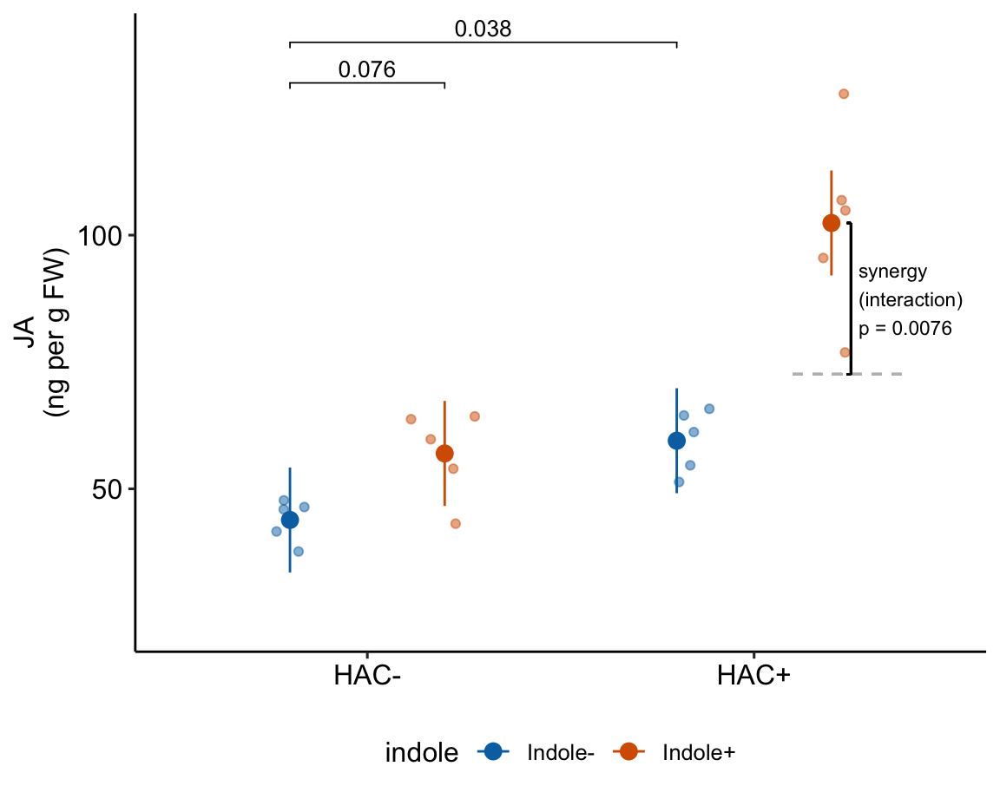

| WT | KO | Effect | |
|---|---|---|---|
| Lean | 33.2 | 34.1 | 0.9 |
| Obese | 41.9 | 32.7 | -9.2 |
| Effect | 8.7 | -1.4 | -10.1 |
13 Linear models with two categorical \(X\) – Factorial linear models (“two-way ANOVA”)
13.1 A linear model with crossed factors estimates interaction effects
A factorial experiment is one in which there are two or more factor variables (categorical \(X\)) that are crossed, resulting in a group for each combination of the levels of each factor. Each specific combination is a different treatment. A linear model with crossed factors is used to estimate interaction effects, which occur when the effect of the level of one factor is conditional on the level of the other factors. Estimation of the interaction effect is necessary for inferences about
- “Something different” – Estimation of a treatment effect relative to a control effect (Example 1 – TLR9-/- mice)
- “It depends” – Estimation of the effect of background condition on an effect (Example 2 – XX mice)
- “More than the sum of the parts” – Estimation of synergy, a non-additive effect (Example 3 – plant root growth)
Inferences like these are common in the experimental biology literature but they are made using the wrong statistics. The correct statistic – the interaction effect – is easy to compute but rarely computed.
NHST Blues
NHST encourages dichotomous thinking such as “there is or isn’t an interaction effect.” Dichotomous thinking can only lead to disasters of biblical proportion, dogs and cats living together. Interaction effects in biology are ubiquitous. Sometimes they are small enough to ignore.
13.1.1 An interaction is a difference in simple effects
In this chapter, I’ll describe an interaction effect using different descriptions (Examples 1-3). Here, I want to emphasize that an interaction effect is a difference of differences. To clarify this, I’ll introduce a fake experiment. A research group has evidence that a certain gene product (CGP) is an intermediary between intestinal microbiota and obesity. The researchers transfer feces from either lean mice or obese mice into either wildtype mice or CGP-/- mice to investigate the effect of microbiota and CGP on body weight. The design has two factors (donor and genotype), each with two levels (donor: “Lean”, “Obese; genotype:”WT”, “KO”), which makes this a \(2 \times 2\) (crossed or factorial) design. There are \(n=6\) replicates for each treatment.
A good way to visualize the treatment combinations in a crossed design is with a \(m \times p\) table showing all combinations of the \(m\) levels of factor 1 (donor) against the \(p\) levels of factor 2 (genotype) (Table 13.1).
- The upper-left \(2 \times 2\) part of the table contains the fake mean body weight of each treatment group. These means are known as cell means.
- The first two elements in the “Effect” column contains the difference of the two cells to the left – these are the effects of genotype conditional on the level of donor.
- The first two elements in the “Effect” row contains the difference of the two cells above – these are the effects of donor conditional on the level of genotype.
- The effects described in items 2 and 3 are known as the simple effects.
- The value in red is the difference of the two simple effects above it. It is also the difference of the two simple effects to the left. These differences are equal. This is the interaction effect.
- In an experiment with a single factor with four levels, all six pairwise comparisons may be of interest. In a \(2 \times 2\) factorial experiment, it is the four simple effects and the interaction effect that should pique the interest of the researcher.
In this fake experiment, we want to know the effect of obese donor treatment in the KO mice compared to the effect of obese donor treatment in the WT mice. That is, we want the contrast of these two simple effects.
\[ (\operatorname{Obese KO} - \operatorname{Lean KO}) - (\operatorname{Obese WT} - \operatorname{Lean WT}) \]
This contrast is the interaction effect. An interaction effect is a difference of differences.
13.1.2 A linear model with crossed factors includes interaction effects
The factorial linear model for the fake data is
\[ \begin{align} \texttt{body\_weight} &= \beta_0\ + \\ &\quad \ \beta_1 (\texttt{donor}_{\texttt{Obese}})\ + \\ &\quad \ \beta_2 (\texttt{genotype}_{\texttt{KO}})\ + \\ &\quad \ \beta_3 (\texttt{donor}_{\texttt{Obese}} : \texttt{genotype}_{\texttt{KO}}) \end{align} \]
What are the variables?
- \(\texttt{donor}_{\texttt{Obese}}\) is the indicator variable for the “Obese” level of the factor \(\texttt{donor}\). It contains the value 1 if the donor was “Obese” and 0 otherwise.
- \(\texttt{genotype}_{\texttt{KO}}\) is the indicator variable for the “KO” level of the factor \(\texttt{genotype}\). It contains the value 1 if the genotype is “KO” and 0 otherwise.
- \(\texttt{donor}_{\texttt{Obese}}\) : _{
is the indicator variable for the interaction between the "Obese" level of $\texttt{donorand the “KO” level of \(\texttt{genotype}\). This “:” character to indicate interaction follows the R formula convention in the LME4 package. Many sources use a \(\times\) symbol instead of the colon. The variable contains the value 1 if the mouse is assigned to both “Obese” and “KO” and 0 otherwise. This value is the product of the values in \(\texttt{donor}_{\texttt{Obese}}\) and \(\texttt{genotype}_{\texttt{KO}}\).
What are the parameters?
This linear model has set “Lean” as the reference level of donor and “WT” as the reference level of genotype. This make the “Lean WT” mice the control.
- \(\beta_0\) is the true mean of the control, which is the “Lean WT” group.
- \(\beta_1\) is the true effect of donor in the WT mice (the effect of manipulating the donor factor but not the genotype factor). It is the difference between the true means of the “Obese WT” group and the “Lean WT” group.
The mean of the “Obese WT” group is \(\beta_0 + \beta_1\). This is the expectation if we start with the control and then add the effect of Obese donor.
- \(\beta_2\) is the true effect of genotype in the mice given feces from lean donors (the effect of manipulating the genotype factor but not the donor factor). It is the difference between the true means of the “Lean KO” group and the “Lean WT” group.
The mean of the “Lean KO” group is \(\beta_0 + \beta_2\). This is the expectation if we start with the control and then add the effect of KO genotype.
- \(\beta_3\) is the true interaction effect of \(\texttt{donor}_{\texttt{Obese}}\) : _{}$
The mean of the “Obese KO” group is \(\beta_0 + \beta_1 + \beta_2 + \beta_3\). The expected mean of the “Obese KO” group, if the factors are additive, which means the interaction effect is zero, is \(\beta_0 + \beta_1 + \beta_2\). The interaction effect is the difference between the actual mean of the “Obese KO” group and this additive mean. The interaction effect is what’s left-over, after you’ve added Obese effect and the KO effect to the control.
13.1.3 factorial experiments are frequently analyzed as flattened linear models in the experimental biology literature
Often, researchers analyze data from a factorial experiment with a one-way ANOVA followed by pairwise tests (or by a simple series of separate t-tests). For the fake experiment, this linear model is
\[ \begin{align} \texttt{body\_weight} &= \beta_0 \ + \\ & \quad \ \beta_1 (\texttt{treatment}_{\texttt{Obese}}) \ + \\ & \quad \ \beta_2 (\texttt{treatment}_{\texttt{KO}}) \ + \\ & \quad \ \beta_3 (\texttt{treatment}_{\texttt{Obese + KO}}) \end{align} \]
I refer to this as a flattened model (the table of treatment combinations has been flattened into a single row). Inference from a factorial or flattened model is the same. We can get the same pairwise contrasts or interaction contrasts from either model. That said, a factorial model nudges researchers to think about the analysis as a factorial design, which is good, because interaction effects are an explicit component of a factorial model.
13.2 Example 1 – Estimation of a treatment effect relative to a control effect (“Something different”) (Experiment 2j glucose uptake data)
To introduce a linear model with crossed factors (categorical \(X\) variables), I’ll use data from a set of experiments designed to measure the effect of the toll-like receptor protein TLR9 on the activation of excercise-induced AMP-activated protein kinase (AMPK) and downstream sequelae of this activation, including glucose transport (from outside to inside the cell) by skeletal muscle cells.
Article source: TLR9 and beclin 1 crosstalk regulates muscle AMPK activation in exercise
The data are from multiple experiments in Figure 2.
13.2.1 Understand the experimental design
Background. Exercise (muscle activity) stimulates AMPK activated glucose uptake (transport from outside to inside the muscle cell). Instead of natural exercise, which can stimulate multiple systems, the researchers directly activate the muscle with electrical stimulation.
Research question There are two ways to think about the question – both produce the same answer.
- How much does TLR9 knockout inhibit the expected increase of glucose uptake following electrical stimulation? The expected increase comes from the contrast of the positive and negative controls. Call this the knockout-induced stimulation effect.
- How much does TLR9 knockout inhibit glucose uptake during muscle stimulation compared to effect of TLR9 knockout during muscle rest? Call this the stimulation-induced TLR9-/- effect.
Response variable glucose_uptake (nmol per mg protein per 15 min) – the rate of glucose transported into the cell.
Factor 1 – genotype (“WT”, “KO”).
- “WT” (reference level) – C57BL/6J mice with intact TLR gene (TLR+/+)
- “KO” – TLR-/- mice on a C57BL/6J background
Factor 2 stimulation (“Rest”, “Active”) – Two levels:
- “Rest” (reference level) – muscle that has not been stimulated.
- “Active” – electrical stimulation of muscle to induce contraction and contractile-related cell changes
These two factors create the three control treatments and the one focal treatment:
“WT Rest” – Negative control. Expect non-exercise (low) level uptake.
“WT Active” – Positive control. Expect high uptake.
“KO Rest” – Method control. Unsure of KO effect on uptake in Rest, which is why we need this control.
“KO Active” – Focal treatment. At about same level of KO Rest if TLR9-/- completely inhibits electrical stimulation of glucose uptake
Design – \(2 \times 2\), that is, two crossed factors each with two levels. This results in four groups, each with a unique combination of the levels from each factor.
Planned Contrasts
The two ways of framing the research question suggest either of the following sets of contrasts. Both ways of framing generate a treatment contrast that includes the focal treatment and a control contrast that does not include the focal treatment. The question pursued by the experiment is addressed with the contrast of the treatment and control contrasts, which is is the estimate of the interaction effect. There is no difference in inference between the two ways of framing the question – the interaction effects are equivalent. The two framings simply give two different ways of viewing an interaction effect.
Framing 1: How much does TLR9 knockout inhibit the expected increase of glucose uptake during stimulation?
(KO Active - KO Rest) – effect of Stimulation in KO mice. This is our treatment contrast. If TLR9 is necessary for glucose uptake, then this should be zero. If positive, there are non-TLR9 paths.
(WT Active - WT Rest) – This is the positive control contrast – it is what we know based on prior knowledge and what we want to compare the treatment effect to. This should be positive based on prior knowledge.
We need to control for the expected increase in 2 using the contrast:
- (KO Active - KO Rest) - (WT Active - WT Rest) – This contrast is the interaction effect. This focal contrast is what we need to estimate the knockout-induced stimulation effect.
Framing 2: What is stimulation-induced TLR9-/- effect?
(KO Active - WT Active) – effect of KO during muscle stimulation. This is our treatment contrast. If TLR9 is necessary for glucose uptake, then this should be big and negative if the KO effect at rest is small.
(KO Rest - WT Rest) – effect of KO when the muscle is not stimulated. This is the methodological control contrast. If TLR9-/- KO has non-muscle-stimulation paths to glucose uptake, this will be something other than zero.
We need to control for any (KO Rest - WT Rest) effect using the contrast:
- (KO Active - WT Active) - (KO Rest - WT Rest) – This contrast is the interaction effect. This focal contrast is what we need to estimate the stimulation-induced TLR9-/- effect.
Our planned contrasts are:
- (WT Active - WT Rest) – positive control contrast
- (KO Rest - WT Rest) – methodological control contrast
- (KO Active - WT Active) – treatment contrast
- (KO Active - WT Active) - (KO Rest - WT Rest) – interaction contrast
13.2.2 Fit the linear model
exp2j_m1 <- lm(glucose_uptake ~ stimulation * genotype,
data = exp2j)13.2.3 Inference
The coefficient table
exp2j_m1_coef <- tidy(exp2j_m1, conf.int = TRUE)
exp2j_m1_coef |>
kable(digits = c(1,2,3,1,4,2,2)) |>
kable_styling()| term | estimate | std.error | statistic | p.value | conf.low | conf.high |
|---|---|---|---|---|---|---|
| (Intercept) | 6.75 | 0.419 | 16.1 | 0.0000 | 5.89 | 7.61 |
| stimulationActive | 3.45 | 0.592 | 5.8 | 0.0000 | 2.23 | 4.67 |
| genotypeKO | 0.78 | 0.639 | 1.2 | 0.2338 | -0.54 | 2.10 |
| stimulationActive:genotypeKO | -2.31 | 0.885 | -2.6 | 0.0152 | -4.13 | -0.48 |
emmeans table
exp2j_m1_emm <- emmeans(exp2j_m1,
specs = c("stimulation", "genotype"))
exp2j_m1_emm |>
kable(digits = c(1,1,2,3,1,2,2)) |>
kable_styling()| stimulation | genotype | emmean | SE | df | lower.CL | upper.CL |
|---|---|---|---|---|---|---|
| Rest | WT | 6.75 | 0.419 | 25 | 5.89 | 7.61 |
| Active | WT | 10.20 | 0.419 | 25 | 9.34 | 11.06 |
| Rest | KO | 7.53 | 0.483 | 25 | 6.53 | 8.53 |
| Active | KO | 8.67 | 0.447 | 25 | 7.75 | 9.59 |
The contrasts table
# exp2j_m1_emm # print in console to get row numbers
# set the mean as the row number from the emmeans table
wt_rest <- c(1,0,0,0)
wt_active <- c(0,1,0,0)
ko_rest <- c(0,0,1,0)
ko_active <- c(0,0,0,1)
# contrasts are the difference in the vectors created above
# these planned contrasts are described above
# 1. (WT Active - WT Rest) -- positive control contrast
# 2. (KO Rest - WT Rest) -- methodological control contrast
# 3. (KO Active - WT Active) -- treatment contrast
# 4. (KO Active - WT Active) - (KO Rest - WT Rest) -- interaction
exp2j_m1_planned <- contrast(
exp2j_m1_emm,
method = list(
"(WT Active - WT Rest)" = c(wt_active - wt_rest),
"(KO Rest - WT Rest)" = c(ko_rest - wt_rest),
"(KO Active - WT Active)" = c(ko_active - wt_active),
"KO:Active Ixn" = c(ko_active - wt_active) -
(ko_rest - wt_rest)
),
adjust = "none"
) |>
summary(infer = TRUE)
exp2j_m1_planned |>
kable(digits = c(0,3,4,0,3,3,2,5)) |>
kable_styling()| contrast | estimate | SE | df | lower.CL | upper.CL | t.ratio | p.value |
|---|---|---|---|---|---|---|---|
| (WT Active - WT Rest) | 3.448 | 0.5919 | 25 | 2.229 | 4.667 | 5.83 | 0.00000 |
| (KO Rest - WT Rest) | 0.780 | 0.6393 | 25 | -0.537 | 2.097 | 1.22 | 0.23379 |
| (KO Active - WT Active) | -1.527 | 0.6127 | 25 | -2.789 | -0.265 | -2.49 | 0.01967 |
| KO:Active Ixn | -2.307 | 0.8855 | 25 | -4.131 | -0.484 | -2.61 | 0.01523 |
# double check with automated contrasts
# contrast(exp2b.2_m1_emm, method = c("revpairwise"))13.2.4 Plot the model
ggplot_the_model(
exp2j_m1,
exp2j_m1_emm,
exp2j_m1_planned,
palette = pal_okabe_ito_blue,
legend_position = "bottom",
y_label = "Glucose uptake\n(nmol per mg protein\nper 15 min)",
effect_label = "Difference in glucose uptake",
rel_heights = c(0.44,1),
)13.2.5 alternaPlot the model
exp2j_m1_pairs <- contrast(exp2j_m1_emm,
method = "revpairwise",
simple = "each",
combine = TRUE,
adjust = "none") |>
summary(infer = TRUE)
b <- emm_b(exp2j_m1_emm)
dodge_width <- 0.4
gg <- ggplot_the_response(
exp2j_m1,
exp2j_m1_emm,
exp2j_m1_pairs[c(1,3,4),],
palette = pal_okabe_ito_blue,
legend_position = "bottom",
y_label = "Glucose uptake\n(nmol per mg protein\nper 15 min)",
y_pos = c(13.6, 13.2, 13.3)
) +
geom_segment(x = 2 + dodge_width/2 - 0.05,
y = b[1] + b[2] + b[3],
xend = 2 + dodge_width/2 + 0.05,
yend = b[1] + b[2] + b[3],
linetype = "dashed",
color = "gray") +
geom_bracket(
x = 2.25,
y = b[1] + b[2] + b[3],
yend = b[1] + b[2] + b[3] + b[4],
label = paste0("ixn p = ",
fmt_p_value_rmd(exp2j_m1_planned[4,"p.value"])),
text.size = 3,
text.hjust = 0,
color = "black") +
NULLWarning: Using `size` aesthetic for lines was deprecated in ggplot2 3.4.0.
ℹ Please use `linewidth` instead.gg13.3 Understanding the linear model with crossed factors 1
Researchers in experimental biology report almost exclusively the p-values of the simple effects (Table 13.1) in data from factorial experiments. These can be computed even if the data are flattened into a single “treatment” factor. But it is the interaction effect that is necessary to make many of the inferences made by the researchers. To see why, we need to understand what the coefficients in the coefficient table are.
13.3.1 What the coefficients are
To understand the coefficients, it helps to use the means in the emmeans table to construct a factorial table of the cell means
| Rest | Active | |
|---|---|---|
| WT | 6.75 | 7.53 |
| KO | 10.20 | 8.67 |
The linear model fit to the exp2j data is
\[ \begin{align} \texttt{glucose\_uptake} &= \beta_{0} \ + \\ &\quad \ \beta_{1}(\texttt{stimulation}_{\texttt{Active}}) \ + \\ &\quad \ \beta_{2}(\texttt{genotype}_{\texttt{KO}}) \ + \\ &\quad \ \beta_{3}(\texttt{stimulation}_{\texttt{Active}} : \texttt{genotype}_{\texttt{KO}}) \end{align} \]
and the fit coefficients are
| term | estimate | std.error | statistic | p.value | conf.low | conf.high |
|---|---|---|---|---|---|---|
| (Intercept) | 6.7501 | 0.42 | 16.1280 | 0.000 | 5.888 | 7.612 |
| stimulationActive | 3.4482 | 0.59 | 5.8258 | 0.000 | 2.229 | 4.667 |
| genotypeKO | 0.7801 | 0.64 | 1.2202 | 0.234 | -0.537 | 2.097 |
| stimulationActive:genotypeKO | -2.3072 | 0.89 | -2.6056 | 0.015 | -4.131 | -0.484 |
Explainer
- Understand what the rows of the coefficient table are. There are four parameters in the fit linear model – the rows are the statistics for the estimates of these parameters. These estimates are the coefficients of the model.
- The
(Intercept)coefficient (\(b_0\)) is the meanglucose_uptakeof the reference level, which was set to the “WT Rest” group (Figure 13.1). This is the mean in the upper left cell in Table 13.2. - The
stimulationActivecoefficient (\(b_2\)) is the estimate of the the added effect of Stimulation when the genotype factor is at its reference level, and so is the mean in the upper right cell minus the mean in the upper left cell in Table 13.2. This coefficient is not a mean – it is a difference of means (Figure 13.1). The mean of the “WT Active” group is \(b_0 + b_2\). - The
genotypeKOcoefficient (\(b_1\)) is the estimate of the the added effect of knocking out TLR9 when the stimulation factor is at its reference level, and so is the mean in the lower left cell minus the mean in the upper left cell in Table 13.2. This coefficient is not a mean – it is a difference of means (Figure 13.1). The mean of the “KO Rest” group is \(b_0 + b_1\). - The
stimulationActive:genotypeKOcoefficient (\(b_3\)) is the estimate of the interaction effect betweengenotypeandstimulation. It is not the mean in the lower right cell minus the mean in the upper left cell. Instead, it is the mean in the lower right cell minus the expected mean in the lower right cell if the genotype and activity treatment effects were additive. The expected additive-mean in the lower right cell (“KO Active”) is \(b_0 + b_1 + b_2\). The mean of KO stimulation is \(b_0 + b_1 + b_2 + b_3\) (Figure 13.1). - The interaction effect is a non-additive effect. Think about this. Adding the Stimulation alone adds 3.45 nmol glucose per protein per 15 min to the uptake rate of the reference. Adding KO alone adds 0.78 glucose per protein per 15 min to the uptake rate of the reference. If these effects were purely additive, then adding both Stimulation and KO to the reference rate should result in a mean of 6.75 + 3.45 + 0.78 = 10.98 glucose per protein per 15 min. The modeled mean for “KO Active” is 8.67 glucose per protein per 15 min. The difference observed - additive is 8.67 - 10.98 = -2.31 glucose per protein per 15 min. Compare this difference to the interaction coefficient in the coefficient table.
- Reinforce your understanding of non-additive in item 5. The interaction is a non-additive effect because the mean of the combined treatment is something different than if we were to just add the KO and Active effects. But this effect is additive in the linear model. This is what linear models are – a reference mean plus the sum of a bunch of effects.
- Understand what these rows are not. The
stimulationActiverow is not the same as the “stimulation” term in a Type III ANOVA table (the ANOVA table produced in GraphPad Prism or JMP). The p-values will be different because the p-values are testing different hypotheses. In the coefficient table, thestimulationActivep-value is testing the difference of the means of WT Active and WT Rest. The stimulation term in a Type III ANOVA table is testing if there is an overall stimulation effect, which is estimated as the average of the two stimulation contrasts (WT Active - WT Rest) and (KO Active - KO Rest). The average of these two contrasts is not often of interest (but sometimes is – see below).

13.3.2 The interaction effect is something different
Item 6 in the coefficient table explainer stated “The interaction is a non-additive effect because the mean of the combined treatment is something different than if we were to just add the KO and Active effects. The something different is the interaction effect. If the interaction effect were zero, the expected effect of stimulation in the KO mice would be the same as the expected effect of stimulation in the WT mice (Figure 13.2). This would suggest the underlying physiological changes between Rest and Active in the KO mice is”more of the same” physiological changes in the WT mice. But, because of the interaction, the underlying physiological changes between Rest and Active in the KO mice is “something different” to that of physiological changes in the WT mice (Figure 13.2).
The biological reasons causing interaction effects are highly variable and are what makes Biology fun. Additive effects (no interaction) may occur when combined treatments act independently of each other. This might occur in the glucose uptake response if knocking out TLR9 opens a path to glucose uptake that is different from and independent of the paths activated by electrial stimulation. Positive, or synergistic interaction effects may occur when combined treatments augment each other’s ability to affect the response (see Example 3 below). This could occur in the glucose uptake response if knocking out TLR9 opens a path to glucose uptake that is different the paths activated by electrial stimulation but also makes the paths activated by stimulation more sensitive to stimulation. Negative, or antagonistic interaction effects may occur when combined treatments interfere with each other’s ability to affect the response. This could occur in the glucose uptake response if TLR9 is on the path from stimulation to glucose uptake. Knocking out TLR9 interferes with this path. If TLR9 is required, we’d expect the interaction effect to be the same magnitude but opposite sign of the control effect – that is, complete antagonism of the control effect. Previous experiments suggested this negative interaction. The measurement of this effect was the purpose of experiment exp2j.

13.3.3 Why we want to compare the treatment effect to a control effect
The purpose of the experiment is to infer a TLR9 role in the regulation of muscle-stimulated glucose transport, that is, a stimulation-induced TLR9-/- effect. If TLR9 is in the pathway from muscle activity to glucose transport, we expect some kind of recovery to baseline (Rest) values in the KO Active group. But TLR9 may also (or alternatively) have a role in non-stimulation-induced glucose uptake.
How do we make an inference about a stimulation-induced TLR9-/- effect using this experiment? Researchers typically look at the treatment effect
(KO Active - WT Active)
and conclude a stimulation-induced TLR9-/- effect if it’s big (and negative)
If the treatment effect is the correct contrast for inference, why bother with the measures of glucose uptake during Rest? The reason the treatment effect alone is the wrong contrast for inferring the stimulation-induced TLR9 effect is because it is confounded by the control effect, which is the contrast (KO Rest - WT Rest) (Figure 13.3).

To unconfound the inference, subtract the confounder:
(KO Active - WT Active) - (KO Rest - WT Rest)
This is the interaction effect. Consequences of interpreting the treatment effect KO Active - WT Active as the stimulation-induced TLR9-/- effect are highlighted in Figure 13.4. In these plots, the data are those from exp2j but with the values in the KO groups shifted up or down to create the scenarios.
Scenario 1. The positive control has big effect AND KO has no effect during rest AND the stimulation-induced TLR9-/- effect is equal in magnitude but opposite direction to the Active effect in WT (Figure 13.4 A). The stimulation-induced TLR9-/- effect is conspicuous from the plot, if our sample means are close to the true means and we have high precision. The simple effect measures the stimulation-induced TLR9-/- effect correctly – but this is because the simple effect is equal in magnitude (but opposite sign) to the interaction effect. Many experiments in the literature are pretty similar to this scenario.
Scenario 2. The positive control has big effect AND KO has a negative effect during rest BUT there is zero stimulation-induced TLR9-/- effect – that is, the interaction is zero (Figure 13.4 B). There is an effect of KO during stimulation but this effect is no different that that occuring during Rest. So this cannot be a contraction induced TLR9 effect. Simple effect 1 inflates the effect.
Scenario 3. The positive control has big effect AND KO has a positive effect during rest AND there is a stimulation-induced TLR9-/- effect that is equal to that in scenario 1 (Figure 13.4 C). The positive effect of KO during Rest masks the stimulation-induced TLR9-/- effect. The simple effect underestimates the stimulation-induced TLR9-/- effect. This is similar to what is happening in Experiment 2j.

13.3.4 The order of the factors in the model tells the same story differently
The order of the factors in the model formula doesn’t matter for the coefficients, the estimated marginal means, or the contrasts. It can matter for ANOVA (more on this below) but not “tests after ANOVA”. But the order does matter to how the researchers communicates the results to themselves and in the report (Figure 13.5). The order is also a natural consequence of the two different ways of framing the research question.
13.3.5 Power for the interaction effect is less than that for simple effects
The interaction contrast is the difference of two simple contrasts and, consequently, the variance of the interaction contrast is twice that of the simple contrasts. And, consequently, the SE of the interaction estimate is \(\sim 1.4 \times\) larger than the precision of the two simple effects that form the contrast (1.4 is $sqrt{2}. The exact value will depend on differences in sample size among groups). The consequence of this is wider confidence intervals and larger p-values for the interaction contrast compared to a simple contrast of the same effect size.
13.3.6 Planned comparisons vs. post-hoc tests
The contrasts computed above were planned based on questions motivating the experiment. The planned contrasts contain three of the four simple effects. The four simple effects are
exp2j_m1_pairs <- contrast(exp2j_m1_emm,
method = "revpairwise",
simple = "each",
combine = TRUE,
adjust = "none") |>
summary(infer = TRUE)
exp2j_m1_pairs |>
kable(digits = c(1,1,1,2,3,1,2,2,1,6)) |>
kable_styling()| genotype | stimulation | contrast | estimate | SE | df | lower.CL | upper.CL | t.ratio | p.value |
|---|---|---|---|---|---|---|---|---|---|
| WT | . | Active - Rest | 3.45 | 0.592 | 25 | 2.23 | 4.67 | 5.8 | 0.000004 |
| KO | . | Active - Rest | 1.14 | 0.659 | 25 | -0.22 | 2.50 | 1.7 | 0.095500 |
| . | Rest | KO - WT | 0.78 | 0.639 | 25 | -0.54 | 2.10 | 1.2 | 0.233785 |
| . | Active | KO - WT | -1.53 | 0.613 | 25 | -2.79 | -0.27 | -2.5 | 0.019668 |
There are six pairwise comparisons for this experiment. Two of these are not a simple effect:
- KO Active - WT Rest
- WT Active - KO Rest
These are the contrasts of the diagonal pairs in the cell-means table (Table 13.2). In a factorial design, we generally are not interested in these diagonal contrasts. They could be reported in a supplement. Recognize that if you are adjusting p-values for multiple tests, and you do not care about these contrasts but have included them in the computation of the adjustment, then your adjusted p-values are conservative.
13.4 Example 2: Estimation of the effect of background condition on an effect (“it depends”) (Experiment 3e lesian area data)
13.4.1 Understand the experimental design
Research question 1. What is the effect of the X chromosome complement on lipid-related disease markers? 2. What is the effect of sex (female or male gonad) on lipid-related disease markers? 3. How conditional is the sex effect on the chromosome complement? 4. How conditional is the effect of X chromosome complement on the level of sex?
Response variable lesian_area – atherosclerotic lesian area in aortic sinus.
Factor 1 – sex (“Female”, “Male”). This is not the typical sex factor that is merely observed but is a manipulated factor. Sex is determined by the presence or absence of SRY on an autosome using the Four Core Genotype mouse model. SRY determines the gonad that develops (ovary or testis). “Female” does not have the autosome with SRY. “Male” has the autosome with SRY.
Factor 2 – chromosome (“XX”, “XY”). The sex chromosome complement is not observed but manipulated. In “XX”, neither sex chromosome has SRY as the natural condition. In “XY”, SRY has been removed from the Y chromosome.
Design – \(2 \times 2\), that is, two crossed factors each with two levels. This results in four groups, each with a unique combination of the levels from each factor. “Female XX” is the control. “Male XX” adds the autosomal SRY gene (and testes instead of an ovary). “Female XY” replaces the “X” complement with the engineered Y complement. “Male XY” has both the autosomal SRY and the engineered Y complement.
| sex | chromosome | treatment | chromosome complement | autosome | gonad |
|---|---|---|---|---|---|
| Female | XX | FXX | X | WT | ovary |
| Male | XX | MXX | X | SRY+ | testis |
| Female | XY | FXY | Y (sry-) | WT | ovary |
| Male | XY | MXY | Y (sry-) | SRY+ | testis |
The research question suggest the following planned contrasts
What is the effect of chromosome on lipid-related disease markers?
- (Female XX - Female XY) – effect of XX in mice with female gonad. If hypothesis is true, this should be large, negative.
- (Male XX - Male XY) – effect of XX in mice with male gonad. If hypothesis is true, this should be large, negative.
What is the effect of sex on lipid-related disease markers?
- (Male XX - Female XX) – effect of sex in XX mice.
- (Male XY - Female XY) – effect of sex in XY in mice.
How conditional are the effects?
- (Male XX - Male XY) - (Female XX - Female XY) – Interaction.
In this experiment, there is no treatment contrast or control contrast. Instead, all four simple contrasts are of equal interest.
13.4.2 Fit the linear model
exp3e_m1 <- lm(lesian_area ~ sex*chromosome, data = exp3e)13.4.3 Check the model
ggcheck_the_model(exp3e_m1)`geom_smooth()` using formula = 'y ~ x'
13.4.4 Inference from the model
The coefficient table
# step 2 - get the coefficient table
exp3e_m1_coef <- tidy(exp3e_m1, conf.int = TRUE)| term | estimate | std.error | statistic | p.value | conf.low | conf.high |
|---|---|---|---|---|---|---|
| (Intercept) | 0.540 | 0.0353 | 15.29 | 0.0000 | 0.464 | 0.616 |
| sexMale | -0.018 | 0.0500 | -0.37 | 0.7172 | -0.126 | 0.089 |
| chromosomeXY | -0.290 | 0.0530 | -5.48 | 0.0001 | -0.404 | -0.177 |
| sexMale:chromosomeXY | 0.143 | 0.0749 | 1.90 | 0.0776 | -0.018 | 0.303 |
The emmeans table
# step 3 - get the modeled means
exp3e_m1_emm <- emmeans(exp3e_m1, specs = c("sex", "chromosome"))
exp3e_m1_emm |>
summary() |>
kable(digits = c(1,1,3,4,1,3,3)) |>
kable_styling()| sex | chromosome | emmean | SE | df | lower.CL | upper.CL |
|---|---|---|---|---|---|---|
| Female | XX | 0.540 | 0.0353 | 14 | 0.464 | 0.616 |
| Male | XX | 0.522 | 0.0353 | 14 | 0.446 | 0.597 |
| Female | XY | 0.250 | 0.0395 | 14 | 0.165 | 0.335 |
| Male | XY | 0.374 | 0.0395 | 14 | 0.289 | 0.459 |
The contrasts table
# m1_emm # print in console to get row numbers
# set the mean as the row number from the emmeans table
fxx <- c(1,0,0,0)
mxx <- c(0,1,0,0)
fxy <- c(0,0,1,0)
mxy <- c(0,0,0,1)
# contrasts are the difference in the vectors created above
# the focal contrasts are in the understand the experiment section
# 1. (FXY - FXX)
# 2. (MXY - MXX)
# 3. (MXX - FXX)
# 4. (MXY - FXY)
# 5. Interaction
exp3e_m1_planned <- contrast(exp3e_m1_emm,
method = list(
"FXY - FXX" = c(fxy - fxx),
"MXY - MXX" = c(mxy - mxx),
"MXX - FXX" = c(mxx - fxx),
"MXY - FXY" = c(mxy - fxy),
"Interaction" = c(mxy - mxx) -
c(fxy - fxx)
),
adjust = "none"
) |>
summary(infer = TRUE)
# check
# exp3e_m1_ixn <- contrast(exp3e_m1_emm,
# interaction = c("revpairwise"),
# by = NULL)
exp3e_m1_planned |>
kable(digits = c(0,3,4,0,3,3,2,5)) |>
kable_styling()| contrast | estimate | SE | df | lower.CL | upper.CL | t.ratio | p.value |
|---|---|---|---|---|---|---|---|
| FXY - FXX | -0.290 | 0.0530 | 14 | -0.404 | -0.177 | -5.48 | 0.00008 |
| MXY - MXX | -0.148 | 0.0530 | 14 | -0.261 | -0.034 | -2.79 | 0.01458 |
| MXX - FXX | -0.018 | 0.0500 | 14 | -0.126 | 0.089 | -0.37 | 0.71716 |
| MXY - FXY | 0.124 | 0.0559 | 14 | 0.004 | 0.244 | 2.22 | 0.04309 |
| Interaction | 0.143 | 0.0749 | 14 | -0.018 | 0.303 | 1.90 | 0.07762 |
Explainer
- The two simple effects and the interaction are computed separately. If we want to adjust for three comparisons, I would use the Holm method.
- The magnitude of the estimated effect of XX in mice with male gonads is about 1/2 that in mice with female gonads. This difference is the magnitude of the interaction.
- Don’t infer “no effect” given the p-value of the interaction. The estimate of the interaction effect has the same magnitude as the estimated effect of XX in mice with male gonads and about 1/2 the magnitude as the estimated effect of XX in mice with female gonads. The interaction p-value suggests caution in our confidence of the sign of this effect.
13.4.5 Plot the model
exp3e_m1_plot <- ggplot_the_model(
fit = exp3e_m1,
fit_emm = exp3e_m1_emm,
fit_pairs = exp3e_m1_planned,
palette = pal_okabe_ito_blue,
legend_position = "bottom",
y_label = expression(paste("Lesian area (", mm^2, ")")),
effect_label = expression(paste("Effect (", mm^2, ")")),
contrast_rows = "all",
rel_heights = c(0.5,1)
)
exp3e_m1_plot13.4.6 alternaPlot the model
exp3e_m1_pairs <- contrast(exp3e_m1_emm,
method = "revpairwise",
simple = "each",
combine = TRUE,
adjust = "none") |>
summary(infer = TRUE)
b <- emm_b(exp3e_m1_emm)
dodge_width <- 0.4
gg <- ggplot_the_response(
exp3e_m1,
exp3e_m1_emm,
exp3e_m1_pairs[1:4,],
palette = pal_okabe_ito_blue,
legend_position = "bottom",
y_label = expression(paste("Lesian area (", mm^2, ")")),
y_pos = c(0.75, 0.78, 0.72, 0.72)
) +
geom_segment(x = 2 + dodge_width/2 - 0.05,
y = b[1] + b[2] + b[3],
xend = 2 + dodge_width/2 + 0.05,
yend = b[1] + b[2] + b[3],
linetype = "dashed",
color = "gray") +
geom_bracket(
x = 2.25,
y = b[1] + b[2] + b[3],
yend = b[1] + b[2] + b[3] + b[4],
label = paste0("ixn p = ",
fmt_p_value_rmd(exp3e_m1_planned[5,"p.value"])),
text.size = 3,
text.hjust = 0,
color = "black")
gg13.5 Understanding the linear model with crossed factors 2
13.5.1 Conditional and marginal means
| Female | Male | mean | |
|---|---|---|---|
| XX | 0.540 | 0.522 | 0.531 |
| XY | 0.250 | 0.374 | 0.312 |
| mean | 0.395 | 0.448 |
The conditional means from the fit model are shown in the upper left \(2 \times 2\) block (white background) of Table 13.3. These means are conditional on the level of sex and chromosome. For the linear model with two crossed factor here (with no continuous covariates), these conditional means are equal to the sample means of the treatment. The values in the last row and column are the marginal means, which are the means of the associated row or column cells (these values are in the margins of the table). More generally, marginal refers to a statistic averaged across multiple levels of another variable. The marginal means of the chromosome levels (orange background) are the means of the “XX” and “XY” rows. The marginal means of the sex levels (blue background) are the means of the “Female” and “Male” columns. Note that the marginal means are simple averages across cell means and not weighted averages where the weights are the sample size used to compute the conditional (cell) means.
13.5.2 Simple (conditional) effects
In a factorial experiment with crossed A and B factors, there is an effect of factor A (relative to the reference, or another level of factor A) for each of the p levels of factor B. And, there is an effect of factor B (relative to the reference, or another level of factor B) for each of the m levels of factor A. These effects of one factor at each of the levels of the other factor are called the simple effects. I prefer conditional effects, since the value of the effect is conditional on the level of the other factor.
For the mouse lesian area experiment, there is a chromosome effect at sex = Female and a different effect at sex = Male. Similarly, there is a sex effect at chromosome = XX and a different effect at chromosome = XY.
| chromosome | sex | contrast | estimate | SE | df | lower.CL | upper.CL | t.ratio | p.value |
|---|---|---|---|---|---|---|---|---|---|
| XX | . | Male - Female | -0.018 | 0.050 | 14 | -0.126 | 0.089 | -0.370 | 0.71716 |
| XY | . | Male - Female | 0.124 | 0.056 | 14 | 0.004 | 0.244 | 2.224 | 0.04309 |
| . | Female | XY - XX | -0.290 | 0.053 | 14 | -0.404 | -0.177 | -5.479 | 0.00008 |
| . | Male | XY - XX | -0.148 | 0.053 | 14 | -0.261 | -0.034 | -2.786 | 0.01458 |
The first two rows are the conditional effects of sex in each of the levels of chromosome. The last two rows are the conditional effects of chromosome in each of the levels of sex.
To help understand conditional effects, I add these to the \(m \times p\) table of treatment combination means ((tab-twoway-simple-effects?)). The values in the right-side column (orange) are the conditional effects of sex at each level of chromosome These values are the difference of the means in the associated row. For example, the conditional effect of sex when chromosome = XY is 0.124 (second value in orange column). The values in the bottom row (blue) are the conditional effects of chromosome at each level of sex. These values are the difference of the means in the associated column. For example, the conditional effect of chromosome when sex = Female is -0.29 (first value in blue row). Note that the first conditional effect for each factor has a corresponding row in the table of coefficients of the fit model because these are the effects for that factor at the reference level of the other factor.
| Female | Male | simple | |
|---|---|---|---|
| XX | 0.54 | 0.522 | -0.018 |
| XY | 0.25 | 0.374 | 0.124 |
| simple | -0.29 | -0.148 |
13.5.3 Marginal effects
The average of the conditional effects for a factor are the marginal effects, or the main effects in ANOVA terminology.
emmeans(exp3e_m1, specs = "sex") |>
contrast(method = "revpairwise")NOTE: Results may be misleading due to involvement in interactions contrast estimate SE df t.ratio p.value
Male - Female 0.0529 0.0375 14 1.411 0.1800
Results are averaged over the levels of: chromosome emmeans(exp3e_m1, specs = "chromosome") |>
contrast(method = "revpairwise")NOTE: Results may be misleading due to involvement in interactions contrast estimate SE df t.ratio p.value
XY - XX -0.219 0.0375 14 -5.844 <.0001
Results are averaged over the levels of: sex I’m showing the full output from the emmeans package output to highlight the warning that the inference “may be misleading” because of the interaction effect in the linear model. This is a healthy warning that I follow up on below.
In Table 13.5, I add the marginal effects to the table of conditional effects from above (Table 13.4).
| Female | Male | simple | marginal | |
|---|---|---|---|---|
| XX | 0.54 | 0.522 | -0.018 | |
| XY | 0.25 | 0.374 | 0.124 | |
| simple | -0.29 | -0.148 | -0.219 | |
| marginal | 0.053 |
13.5.4 The additive model
Marginal effects can be useful for summarizing a general trend, but, like any average, might not be especially meaningful if there is large heterogeneity of the simple effects, which occurs when the interaction effect is large.
If an interaction effect is small, and we want to summarize the results as general trends (“sex does this, chromosome does that”), then the best practice strategy is to refit a new linear model that estimates the effects of the two factors as if the interaction were equal to zero.
\[ \begin{align} \texttt{lesian\_area} &= \beta_0 \ + \\ &\quad \ \beta_1 \texttt{sex}_\texttt{Male} \ + \\ &\quad \ \beta_2 \texttt{chromosome}_\texttt{XY} \end{align} \tag{13.1}\]
Model Equation 13.1 is a reduced model because one of the terms has been removed from the model. This particular reduced model is often referred to as the additive model, since it excludes the interaction term, which is non-additive effect (the indicator variable is the product of two “main” indicator variables). In R, this model is
exp3e_m2 <- lm(lesian_area ~ sex + chromosome, data = exp3e)The model coefficients of the additive model are
| term | estimate | std.error | statistic | p.value | conf.low | conf.high |
|---|---|---|---|---|---|---|
| (Intercept) | 0.508 | 0.034 | 15.06 | 0.000 | 0.436 | 0.580 |
| sexMale | 0.045 | 0.040 | 1.11 | 0.283 | -0.041 | 0.131 |
| chromosomeXY | -0.219 | 0.041 | -5.39 | 0.000 | -0.306 | -0.132 |
Explainer
sexMaleis the average of the two conditional effects of “Male” (one atchromosome = "XX"and one atchromosome = "XY).chromosomeXYis the average of the two conditional effects of “XY” (one atsex = "Female"and one atsex = "Male).(Intercept)is the expected value without the addedsexMaleorchromosomeXYeffects. This is a very abstract “average” of Female XX and is not the average value in the Female XX group.
The conditional effects of the reduced model are
| chromosome | sex | contrast | estimate | SE | df | lower.CL | upper.CL | t.ratio | p.value |
|---|---|---|---|---|---|---|---|---|---|
| XX | . | Male - Female | 0.04495 | 0.040 | 15 | -0.041 | 0.131 | 1.11 | 0.28292 |
| XY | . | Male - Female | 0.04495 | 0.040 | 15 | -0.041 | 0.131 | 1.11 | 0.28292 |
| . | Female | XY - XX | -0.21895 | 0.041 | 15 | -0.306 | -0.132 | -5.39 | 0.00007 |
| . | Male | XY - XX | -0.21895 | 0.041 | 15 | -0.306 | -0.132 | -5.39 | 0.00007 |
Explainer
- In an additive model, all conditional effects for one factor are the same for each level of the other factor. This makes sense. If the model fit is additive, the interaction effect is set to zero by the model and there cannot be differences in conditional effects among the contrasts at each of the levels of the other factor (otherwise, there would be an interaction). A more sensible way of thinking about this is, it doesn’t make sense to compute or discuss conditional effects in an additive model. Instead, an additive model automatically estimates marginal effects.
- Compare the table of marginal effects of the additive model to the table of marginal effects of the full model. The estimates for the chromosome effect are the same but the t-values and p-values differ because of different degrees of freedom (the full model estimates one more parameter, the interaction effect). The estimates for the sex effect are not the same between the two tables because of an imbalance of sample size. In the computation of the marginal effect of chromosome, the two simple effects both have sample size of 5 and 4. But in the computation of the marginal effect of sex, one simple effect has sample size of 5 and 5 while the other has a simple effect of 4 and 4.
13.5.5 Reduce models for the right reason
Unless one factor truly has no effect, there will always be an interaction. As stated above, interactions are ubiquitous. If an interaction is small, it can make sense to drop the interaction term and re-fit an additive model to estimate marginal effects in order to present a simplified picture of what is going on, with the recognition that these estimates are smoothing over the heterogenity in conditional (simple) effects that truly exist.
Aided and abetted by statistics textbooks for biologists, there is a long history of researchers dropping an interaction effect because the interaction \(p>0.05\). A good rule of thumb is, don’t make model decisions based on p-values. It doesn’t make any sense.
- The \(p\)-value is an arbitrary dichotomization of a continuous variable. Would it make sense to behave differently if the interaction were \(p=0.06\) vs. \(p=0.04\), given that these two p-values are effectively identical?
- A \(p\)-value is not evidence that an effect is zero, or “doesn’t exist”, or even that an effect is “trivially small”. This is because \(p\)-values are a function of measurement error, sampling error, and sample size, in addition to effect size.
The interaction p-value for the lesion-area data is 0.078. Should we refit the additive model and report a simpler story of “a” chromosome effect and “a” sex effect? This reduced model isn’t invalid and it is useful. Some considerations.
- there is certainly a real interaction between these two factors and this interaction reflects interesting biology.
- For this example, I might report both – the additive effect in the main paper (since the big chromosome complement effect is the story) and the conditional effects in the supplement, which might further work on investigating the underlying biology. Or maybe two sets of p-values on the plot? There are lots of unexplored ways to provide more “ways” of looking at the results.
- Regardless, for this example, I would not avoid reporting the interaction effect and the conditional effects somewhere. The estimated interaction effect (0.14 mm\(^2\)) is moderately large relative to the four simple effects. It’s much bigger than the marginal effect of sex and about 2/3 the size of the marginal effect of chromosome (Table 13.6).
- A response plot of both models (Figure 13.6) can help understanding and the decision of which model to report.

13.5.6 The marginal means of an additive linear model with two factors can be weird
To better understand the marginal effects computed from the additive model, let’s compare the emmeans table of the factorial and additive models.
| sex | chromosome | emmean | SE | df | lower.CL | upper.CL |
|---|---|---|---|---|---|---|
| Female | XX | 0.540 | 0.035 | 14 | 0.464 | 0.616 |
| Male | XX | 0.522 | 0.035 | 14 | 0.446 | 0.597 |
| Female | XY | 0.250 | 0.039 | 14 | 0.165 | 0.335 |
| Male | XY | 0.374 | 0.039 | 14 | 0.289 | 0.459 |
| sex | chromosome | emmean | SE | df | lower.CL | upper.CL |
|---|---|---|---|---|---|---|
| Female | XX | 0.508 | 0.034 | 15 | 0.436 | 0.580 |
| Male | XX | 0.553 | 0.034 | 15 | 0.481 | 0.625 |
| Female | XY | 0.289 | 0.036 | 15 | 0.212 | 0.367 |
| Male | XY | 0.334 | 0.036 | 15 | 0.257 | 0.412 |
Explainer
- The means in the conditional means table (Table 13.7) are equal to the sample means. These are conditional on
sexandchromosome. - The means in the marginal means table (Table 13.8) are not equal to the sample means. These are modeled means of the four groups from a model in which there is no interaction effect, so all conditional effects for one factor are the same for each level of the other factor. If you take the difference of Male - Female for both the XX and the XY groups, these will be the same. All data has some measured interaction (even if there is no true interaction. But remember, interaction is ubiquitous in biology). The larger this interaction, the more weird the marginal means because these are less compatible with the data.
13.6 Example 3: Estimation of synergy (“More than the sum of the parts”) (Experiment 1c JA data)
To explain what synergy is and why it is estimated by the interaction effect, this example uses data from an experiment measuring the effect of two defense signals on the defense response in Maize plants. In response to herbivory from insects, maize, and other plants, release multiple, chemical signals into the air (chemicals that evaporate into the air are known as volatile compounds). These chemicals signal the plant, and neighboring plants, to secrete anti-herbivory hormones, including abcisic acid and jasmonic acid. The researchers investigated the effects of two volatile compounds, (Z)‐3‐hexenyl acetate (HAC) and Indole, on the defense response both each without the other and in combination.
The example data come from Figure 1c, which is the effect of HAC and Indole on tissue concentrations of the hormone jasmonic acid (JA). The design is fully crossed with two factors, each with two levels: hac, with levels “HAC-” and “HAC+”, and indole, with levels (“Indole-” and “Indole+”).
| HAC- | HAC+ | |
|---|---|---|
| Indole- | Control | HAC |
| Indole+ | Indole | HAC+Indole |
13.6.1 Examine the data
qplot(x = treatment, y = ja, data = exp1)Warning: `qplot()` was deprecated in ggplot2 3.4.0.
Too few points for box plot. control variance is small. No obvious implausible points. fit with lm but recognize small n warning for any inference.
13.6.2 Fit the model
exp1c_m1 <- lm(ja ~ hac * indole, data = exp1)13.6.3 Model check
ggcheck_the_model(exp1c_m1)Warning in rlm.default(x, y, weights, method = method, wt.method = wt.method, :
'rlm' failed to converge in 20 steps`geom_smooth()` using formula = 'y ~ x'
The distribution looks like a sample from a Normal. The variance looks like it increases with the mean. This suggest gls modeling heterogeneity.
13.6.4 Inference from the model
exp1c_m1_coef <- tidy(exp1c_m1, conf.int = TRUE)
exp1c_m1_coef |>
kable(digits = 3) |>
kable_styling()| term | estimate | std.error | statistic | p.value | conf.low | conf.high |
|---|---|---|---|---|---|---|
| (Intercept) | 43.862 | 4.881 | 8.986 | 0.000 | 33.515 | 54.210 |
| hacHAC+ | 15.615 | 6.903 | 2.262 | 0.038 | 0.982 | 30.249 |
| indoleIndole+ | 13.104 | 6.903 | 1.898 | 0.076 | -1.529 | 27.738 |
| hacHAC+:indoleIndole+ | 29.813 | 9.762 | 3.054 | 0.008 | 9.118 | 50.508 |
exp1c_m1_emm <- emmeans(exp1c_m1, specs = c("hac", "indole"))
exp1c_m1_emm |>
kable(digits = c(1,1,1,2,1,1,1)) |>
kable_styling()| hac | indole | emmean | SE | df | lower.CL | upper.CL |
|---|---|---|---|---|---|---|
| HAC- | Indole- | 43.9 | 4.88 | 16 | 33.5 | 54.2 |
| HAC+ | Indole- | 59.5 | 4.88 | 16 | 49.1 | 69.8 |
| HAC- | Indole+ | 57.0 | 4.88 | 16 | 46.6 | 67.3 |
| HAC+ | Indole+ | 102.4 | 4.88 | 16 | 92.0 | 112.7 |
# exp1c_m1_emm # print in console to get row numbers
# set the mean as the row number from the emmeans table
ref <- c(1,0,0,0)
hac <- c(0,1,0,0)
indole <- c(0,0,1,0)
hac_indole <- c(0,0,0,1)
# contrasts are the difference in the vectors created above
# these planned contrasts are described above
# 1. (hac+/indole- - hac-/indole-) # add hac
# 2. (hac-/indole+ - hac-/indole-) # add indole
# 3. (hac+/indole+ - hac-/indole+) - (hac+/indole- - hac-/indole-) # Interaction
exp1c_m1_planned <- contrast(
exp1c_m1_emm,
method = list(
"hac+" = c(hac - ref),
"indole+" = c(indole - ref),
"HAC/Indole Ixn" = c(hac_indole - indole) -
(hac - ref)
),
adjust = "none"
) |>
summary(infer = TRUE)
exp1c_m1_planned |>
kable(digits = c(1,2,3,1,2,2,2,5)) |>
kable_styling()| contrast | estimate | SE | df | lower.CL | upper.CL | t.ratio | p.value |
|---|---|---|---|---|---|---|---|
| hac+ | 15.62 | 6.903 | 16 | 0.98 | 30.25 | 2.26 | 0.03796 |
| indole+ | 13.10 | 6.903 | 16 | -1.53 | 27.74 | 1.90 | 0.07583 |
| HAC/Indole Ixn | 29.81 | 9.762 | 16 | 9.12 | 50.51 | 3.05 | 0.00758 |
13.6.5 Plot the model

13.6.6 Alternative plot

13.7 Understanding the linear model with crossed factors 3
13.7.1 Thinking about the coefficients of the linear model
\[ \begin{align} \texttt{ja} &= \beta_0 \ + \\ &\quad \ \beta_1 (\texttt{hac}_\texttt{HAC+}) \ + \\ &\quad \ \beta_2 (\texttt{indole}_\texttt{Indole+}) \ + \\ &\quad \ \beta_3 (\texttt{hac}_\texttt{HAC+}:\texttt{indole}_\texttt{Indole+}) \end{align} \tag{13.2}\]
The linear model makes it easy to understand synergy in the \(2 \times 2\) design. If we start with the mean of the reference (the group without the added HAC or Indole), then \(\beta_1\) is the extra bit due to adding HAC, \(\beta_2\) is the extra bit due to adding Indole, and \(\beta_3\) is the extra bit due to synergy between HAC and Indole. A positive \(\beta_3\) means the combined treatment effect is more than the sum of the parts.
| term | estimate | std.error | statistic | p.value | conf.low | conf.high |
|---|---|---|---|---|---|---|
| (Intercept) | 43.86 | 4.9 | 8.986 | 0.00 | 33.51 | 54.21 |
| hacHAC+ | 15.62 | 6.9 | 2.262 | 0.04 | 0.98 | 30.25 |
| indoleIndole+ | 13.10 | 6.9 | 1.898 | 0.08 | -1.53 | 27.74 |
| hacHAC+:indoleIndole+ | 29.81 | 9.8 | 3.054 | 0.01 | 9.12 | 50.51 |
Again, the interaction is a non-additive effect. Adding HAC alone increases JA concentration by 15.6 ng per g FW. Adding Indole alone increases JA concentration by 13.1 ng per g FW. If these effects were purely additive, then adding both HAC and Indole to the Control mean should result in a mean of 43.9 + 15.6 + 13.1 = 72.6 ng per g FW in the HAC+Indole group. The modeled mean is 102.4 ng per g FW. The difference (observed - additive) is 102.4 - 72.6 = 29.8 ng per g FW. This is the estimated interaction effect in the coefficient table.

13.8 Issues in inference
13.8.1 For pairwise inference, it doesn’t matter if you fit a factorial or a flattened linear model, but…
Compare the pairwise comparisons of the Experiment 2j glucose uptake data using a factorial linear model and a flattened linear model.
Factorial:
m1 <- lm(glucose_uptake ~ stimulation * genotype, data = exp2j)
m1_emm <- emmeans(m1, specs = c("stimulation", "genotype"))
m1_pairs <- contrast(m1_emm,
method = "revpairwise",
adjust = "tukey") |>
summary(infer = TRUE)
m1_pairs |>
kable(digits = c(3)) |>
kable_styling()| contrast | estimate | SE | df | lower.CL | upper.CL | t.ratio | p.value |
|---|---|---|---|---|---|---|---|
| Active WT - Rest WT | 3.448 | 0.592 | 25 | 1.820 | 5.076 | 5.826 | 0.000 |
| Rest KO - Rest WT | 0.780 | 0.639 | 25 | -0.978 | 2.539 | 1.220 | 0.620 |
| Rest KO - Active WT | -2.668 | 0.639 | 25 | -4.427 | -0.910 | -4.173 | 0.002 |
| Active KO - Rest WT | 1.921 | 0.613 | 25 | 0.236 | 3.606 | 3.136 | 0.021 |
| Active KO - Active WT | -1.527 | 0.613 | 25 | -3.212 | 0.158 | -2.493 | 0.086 |
| Active KO - Rest KO | 1.141 | 0.659 | 25 | -0.671 | 2.953 | 1.733 | 0.329 |
Flattened:
m2 <- lm(glucose_uptake ~ treatment, data = exp2j)
m2_emm <- emmeans(m2, specs = c("treatment"))
m2_pairs <- contrast(m2_emm,
method = "revpairwise",
adjust = "tukey") |>
summary(infer = TRUE)
m2_pairs |>
kable(digits = c(3)) |>
kable_styling()| contrast | estimate | SE | df | lower.CL | upper.CL | t.ratio | p.value |
|---|---|---|---|---|---|---|---|
| WT Active - WT Rest | 3.448 | 0.592 | 25 | 1.820 | 5.076 | 5.826 | 0.000 |
| KO Rest - WT Rest | 0.780 | 0.639 | 25 | -0.978 | 2.539 | 1.220 | 0.620 |
| KO Rest - WT Active | -2.668 | 0.639 | 25 | -4.427 | -0.910 | -4.173 | 0.002 |
| KO Active - WT Rest | 1.921 | 0.613 | 25 | 0.236 | 3.606 | 3.136 | 0.021 |
| KO Active - WT Active | -1.527 | 0.613 | 25 | -3.212 | 0.158 | -2.493 | 0.086 |
| KO Active - KO Rest | 1.141 | 0.659 | 25 | -0.671 | 2.953 | 1.733 | 0.329 |
::: {.callout-tip, title=“Here’s the but…} But…just fit the factorial model. This makes it much easier to get the best practice mindless contrasts (the simple effects) and the interaction effect (either from the coefficient table or the emmeans package) and if Reviewer 2/PI/boss/old-school colleague demands p-value adjustment you will have slightly more power adjusting for a family of four simple effects than six pairwise comparisons (see below). :::
13.8.2 For interaction interaction, it doesn’t matter if you fit a factorial or a flattened linear model, but…
Factorial model:
# using m1 from above
m1_ixn <- contrast(m1_emm,
interaction = "revpairwise") |>
summary(infer = TRUE)
m1_ixn |>
kable(digits = c(3)) |>
kable_styling()| stimulation_revpairwise | genotype_revpairwise | estimate | SE | df | lower.CL | upper.CL | t.ratio | p.value |
|---|---|---|---|---|---|---|---|---|
| Active - Rest | KO - WT | -2.307 | 0.885 | 25 | -4.131 | -0.484 | -2.606 | 0.015 |
Flattened model:
# need to compute the interaction as a contrast
# using m2 from the previous chunk
# m2_emm # print in console to get row numbers
# set the mean as the row number from the emmeans table
wt_rest <- c(1,0,0,0)
wt_active <- c(0,1,0,0)
ko_rest <- c(0,0,1,0)
ko_active <- c(0,0,0,1)
# contrasts are the difference in the vectors created above
# 4. (KO Active - WT Active) - (KO Rest - WT Rest) -- interaction
m2_ixn <- contrast(m2_emm,
method = list(
"KO:Active Ixn" = c(ko_active - wt_active) -
(ko_rest - wt_rest)
)) |>
summary(infer = TRUE)
m2_ixn |>
kable(digits = c(3)) |>
kable_styling()| contrast | estimate | SE | df | lower.CL | upper.CL | t.ratio | p.value |
|---|---|---|---|---|---|---|---|
| KO:Active Ixn | -2.307 | 0.885 | 25 | -4.131 | -0.484 | -2.606 | 0.015 |
::: {.callout-tip, title=“Here’s the but…} But…see the previous tip :::
13.8.3 Adjusting p-values for multiple tests
First, you probably don’t want to adjust for multiple tests in a 2 x 2 (or larger) design (Chapter 12). Or, if you do, you want to adjust for multiple responses, not multiple contrasts within one response (Chapter 12). Understand that the norm in experimental bench biology misunderstands what a family of tests is (Chapter 12).
But, if Reviewer 2, or your PI, or an older colleague demands p-value adjustment, just say no. If you cannot, then read on.
Here are seven different adjustment methods (including no adjustment) for the simple effects of the exp2j data.
| Contrast | None | Tukey-all | Bonferroni | Sidak | Holm | MvT | BH |
|---|---|---|---|---|---|---|---|
| Active WT - Rest WT | 0.00 | 0.000 | 0.000 | 0.000 | 0.000 | 0.000 | 0.000 |
| Active KO - Rest KO | 0.10 | 0.329 | 0.382 | 0.331 | 0.191 | 0.275 | 0.127 |
| Rest KO - Rest WT | 0.23 | 0.620 | 0.935 | 0.655 | 0.234 | 0.561 | 0.234 |
| Active KO - Active WT | 0.02 | 0.086 | 0.079 | 0.076 | 0.059 | 0.066 | 0.039 |
- None – no adjustment
- Tukey – Tukey’s HSD method is the most common method used to compare all pairwise comparisons.
- Bonferroni – Bonferroni is a general purpose method to compare any set of multiple tests. The test is conservative. Use the Holm modification instead.
- Sidak – Sidak correction is a modification of Bonferroni with slightly more power.
- Holm – Holm-Bonferroni is a modification of Bonferroni with more power. Use this instead of Bonferroni.
- BH – controls the false discovery rate not the Type I error rate for a family of tests. See ?sec-mult-tests-fdr for full explanation of FDR and when we would want to use it.
- Mvt – based on the multivariate t distribution and using covariance structure of the variables.
Further thoughts on multiple adjustment, focusing on the highlighted row in the table.
- Report the focal p-values on the figure. Then, report all pairwise and interaction, p-values in a supplement. Reporting all p-values on the figure overwhelms the principal message of a figure. There should be a table of these for every experiment in the supplement.
- If you’re following best practice, report the focal none-adjusted p-values in the figure. Then, in the supplement, report the none-adjusted and adjusted value for all pairwise comparisons and interaction effects.
- If you’ve adjusted for multiple response variables (Chapter 12), report the focal, adjusted values on the figure (adjusted for multple responses, not multiple tests within a response). Then, in the supplement, report the none-adjusted and adjusted value for all pairwise comparisons and interaction effects, again, using the adjustment for multiple responses not multiple tests within a response.
- In a Fisherian world-view of p-values, there just isn’t any real difference in inference between \(p = 0.02\) (no adjustment) and \(p = 0.086\) (Tukey adjustment from all pairwise comparisons). Fisher expected decisions based on multiple replications of the experiment, all (or nearly) with \(p < 0.05\). From a Fisherian-world-view, then, we have bigger how-to-do-science issues than multiple testing if we are making decisions entirely on \(p = 0.02\) versus \(p = 0.086\).
- From a Neyman-Pearson testing world-view, there is a consequential difference in inference between \(p = 0.02\) (no adjustment) and \(p = 0.086\) (Tukey adjustment from all pairwise comparisons) but I don’t think experimental bench biologists are practicing pure Neyman-Pearson.
13.9 Two-way ANOVA
Both wet-bench and ecology/evolution experimental biologists do ANOVA. Many textbooks, advisors, and colleagues tell researchers to report “tests after ANOVA” – what I call pairwise contrasts – but in modern computing, pairwise contrasts and ANOVA tables are both computed from the same underlying regression model. The ANOVA is not necessary for any inference, a point I return to below.
Let’s use the glucose uptake experiment (Example 1) to explore the ANOVA table.
13.9.1 How to read a two-way ANOVA table
| Effect | df | F | p.value |
|---|---|---|---|
| stimulation | 1, 25 | 26.86 | <.0001 |
| genotype | 1, 25 | 0.71 | .41 |
| stimulation:genotype | 1, 25 | 6.79 | .02 |
Explainer
- This ANOVA table is computed using Type III sum of squares and should match the output from most statistics software including Graphpad Prism. The relevance of this is addressed below.
- In general, an ANOVA table has a row for each term in the underlying linear model. ANOVA is a method for decomposing the total variance into batches and each of these terms is a batch. For the linear model with two crossed factors, there is a term for each factor and a term for the interaction.
stimulationandgenotypeare the main (or 1st order) effects.stimulation:genotypeis the interaction (or 2nd order) effect. These terms are the row names of the table. - Some ANOVA functions in R also include a row for the variance of the residuals from the fit model. This row can be useful for learning what the values in ANOVA table are but only one statistic from the row (the residual df) is especially useful for reporting. In Table 13.10, this residual df is included in the statistics for each term.
- Many ANOVA tables contain additional SS (sum of squares) and MSE (mean square error) columns. The MSE is the variance of the term and used to compute the F statistic. The SS is used to compute the MSE. Since these columns are used for computation but not reporting, Table 13.10 excludes these.
- df (Degree of freedom) – If the term is a factor, the df will equal the number of levels (\(k\)) for the factor minus 1. Think of it this way: the contribution of the variance due to a factor is a function of the variability of the \(k\) level means around the grand mean. How many degrees of independent variation do these level means have, given that we know the grand mean? The answer is \(k-1\) – once the values of \(k-1\) level means are written down, the \(k\)th level mean has no freedom to vary; its value has to be \(k\bar{\bar{Y}} - \sum_i^{k-1}{Y_i}\). For an interaction term, the df is the product of the df of each of the factors in the interaction.
- F (F-value or F-ratio) – This is the test statistic. It is the ratio of the MSE for the term divided by the MSE of the residual (this is strictly true for only “Fixed effects” ANOVA, which we have here).
- p.value – the p-value for the test statistic. F is compared to an F-distribution, which is a distribution of F-values under the null.
13.9.2 What do the main effects in an ANOVA table mean?
It is very common in the literature to see researchers report the rows of an ANOVA table by stating something like “We found an effect of stimulation on glucose uptake (\(F_{1,25} = 26.9\), \(p < 0.0001\))”. Thinking of a main effect term in an ANOVA table as “an effect” can be misleading. What does “an effect” mean? Afterall, there are two effects of stimulation in this experiment, one in the wildtype mice and one in the TLR9-/- mice.
Main effects in ANOVA tables are about average effects. A main effect in a two-way ANOVA table is an “overall” marginal effect. Recall that a marginal effect of the level of Factor A is the average of the conditional effects at each level of B (Section 13.5.3). For a \(2 \times 2\) table, there is only one marginal effect for each factor and, as a consquence, the p value for the main effect term of stimulation in the ANOVA table (Table 13.11) is equal to the p-value of the marginal effect of stimulation in the contrast table (Table 13.12). The “main term” effect of stimulation is illustrated in Figure 13.7.
| num Df | den Df | F | Pr(>F) | |
|---|---|---|---|---|
| stimulation | 1 | 25 | 26.86 | 0.0000232 |
| genotype | 1 | 25 | 0.71 | 0.4068630 |
| stimulation:genotype | 1 | 25 | 6.79 | 0.0152305 |
| contrast | estimate | SE | df | lower.CL | upper.CL | t.ratio | p.value |
|---|---|---|---|---|---|---|---|
| Active - Rest | 2.29 | 0.443 | 25 | 1.38 | 3.21 | 5.183 | 0.0000232 |
Again, main effects in ANOVA tables are about average effects. Is the average effect what we want to report? The answer is, it depends. It does not depend on the p-value of the interaction (the answer in many textbooks and websites) although the p-value is, perhaps, not irrelevant. Rather, it depends on the research question motivating the experiment. The research question in Experiment 2j specifically predicted a different treatment (KO Active - KO Rest) and control effect (WT Active - WT Rest). The average of these two effects isn’t of interest. Any inference about the average effect of stimulation (the p-value from the ANOVA table or the marginal effect size or CIs) doesn’t answer any question motivating the experiment. A more general discussion of when we might be interested in the main effect term of an ANOVA table (or better, marginal effects) was in section xxx and below in section xxx.
13.10 More issues in inference
13.10.1 Longitudinal experiments – include Time as a random factor (better than repeated measures ANOVA)
13.11 Working in R
13.11.1 Model formula
A linear model with two crossed factors is specified in the model formula as y ~ A*B where A is the first factor, and B is the second factor. R expands this formula to y ~ 1 + A + B + A:B where the colon indicates an interaction (multiplicative) effect.
m1 <- lm(glucose_uptake ~ stimulation * genotype, data = exp2j)| term | estimate | std.error | statistic | p.value | conf.low | conf.high |
|---|---|---|---|---|---|---|
| (Intercept) | 6.75 | 0.419 | 16.13 | 0.0000000 | 5.89 | 7.61 |
| stimulationActive | 3.45 | 0.592 | 5.83 | 0.0000045 | 2.23 | 4.67 |
| genotypeKO | 0.78 | 0.639 | 1.22 | 0.2337850 | -0.54 | 2.10 |
| stimulationActive:genotypeKO | -2.31 | 0.885 | -2.61 | 0.0152305 | -4.13 | -0.48 |
The order of the factors in the model formula doesn’t matter for the values of the coefficients, the estimated marginal means, or the contrasts. It can matter for ANOVA (more on this below) but not “tests after ANOVA”.
m1_b <- lm(glucose_uptake ~ genotype * stimulation, data = exp2j)| term | estimate | std.error | statistic | p.value | conf.low | conf.high |
|---|---|---|---|---|---|---|
| (Intercept) | 6.75 | 0.419 | 16.13 | 0.0000000 | 5.89 | 7.61 |
| genotypeKO | 0.78 | 0.639 | 1.22 | 0.2337850 | -0.54 | 2.10 |
| stimulationActive | 3.45 | 0.592 | 5.83 | 0.0000045 | 2.23 | 4.67 |
| genotypeKO:stimulationActive | -2.31 | 0.885 | -2.61 | 0.0152305 | -4.13 | -0.48 |
The additive model is specified by the formula y ~ A + B
m2 <- lm(glucose_uptake ~ stimulation + genotype, data = exp2j)| term | estimate | std.error | statistic | p.value | conf.low | conf.high |
|---|---|---|---|---|---|---|
| (Intercept) | 7.27 | 0.408 | 17.82 | 0.0000000 | 6.43 | 8.10 |
| stimulationActive | 2.42 | 0.487 | 4.97 | 0.0000368 | 1.42 | 3.42 |
| genotypeKO | -0.42 | 0.489 | -0.86 | 0.3954703 | -1.43 | 0.58 |
13.11.2 Using the emmeans function
13.11.2.1 Conditional means table
# model m1 fit above
# m1 <- lm(glucose_uptake ~ stimulation * genotype, data = exp2j)
m1_emm <- emmeans(m1, specs = c("stimulation", "genotype"))
m1_emm stimulation genotype emmean SE df lower.CL upper.CL
Rest WT 6.75 0.419 25 5.89 7.61
Active WT 10.20 0.419 25 9.34 11.06
Rest KO 7.53 0.483 25 6.53 8.53
Active KO 8.67 0.447 25 7.75 9.59
Confidence level used: 0.95 Notes
- Printing the
emmeansobject displays useful information. Here, this information includes the confidence level used. If the object is printed usingkable() |> kable_styling()(as in the “Inference” and “Understanding” sections above), only the table is printed and the additional information is lost. emmeanscomputes the modeled means of all combinations of the levels of the factor variables specified inspecs.- If there are two factor variables in the model, and both are passed to
specs, then the modeled means of all combinations of the levels of the two variables are computed. If only one factor variable is passed, then the marginal means (averaged over all levels of the missing factor) are computed (see below).
13.11.2.2 Marginal means
m1_emm_stimulation <- emmeans(m1, specs = c("stimulation"))NOTE: Results may be misleading due to involvement in interactionsm1_emm_stimulation stimulation emmean SE df lower.CL upper.CL
Rest 7.14 0.320 25 6.48 7.8
Active 9.43 0.306 25 8.80 10.1
Results are averaged over the levels of: genotype
Confidence level used: 0.95 Notes
- In a model with two crossed factors,
y ~ A * B, the marginal means of the levels ofA, averaged over all levels ofBare computed by settingspecs =toAonly. - Remember that the
specsargument sets the values of the predictors for which we want a mean. By excludingB, we don’t get the means of the levels ofAat each level ofBbut averaged across the levels ofB.emmeans“knows” to average across the levels ofBbecauseBis in the model.
13.11.3 Contrasts
13.11.3.1 Planned contrasts
wt_rest <- c(1,0,0,0)
wt_active <- c(0,1,0,0)
ko_rest <- c(0,0,1,0)
ko_active <- c(0,0,0,1)
m1_planned <- contrast(
m1_emm,
method = list(
"(WT Active - WT Rest)" = c(wt_active - wt_rest),
"(KO Rest - WT Rest)" = c(ko_rest - wt_rest),
"(KO Active - WT Active)" = c(ko_active - wt_active),
"KO:Active Ixn" = c(ko_active - wt_active) -
(ko_rest - wt_rest)
),
adjust = "none"
) |>
summary(infer = TRUE)| contrast | estimate | SE | df | lower.CL | upper.CL | t.ratio | p.value |
|---|---|---|---|---|---|---|---|
| (WT Active - WT Rest) | 3.45 | 0.592 | 25 | 2.23 | 4.67 | 5.83 | 0.0000 |
| (KO Rest - WT Rest) | 0.78 | 0.639 | 25 | -0.54 | 2.10 | 1.22 | 0.2338 |
| (KO Active - WT Active) | -1.53 | 0.613 | 25 | -2.79 | -0.27 | -2.49 | 0.0197 |
| KO:Active Ixn | -2.31 | 0.885 | 25 | -4.13 | -0.48 | -2.61 | 0.0152 |
13.11.3.2 All pairwise effects
m1_pairs <- contrast(m1_emm,
method = "revpairwise",
adjust = "tukey",
level = 0.95) |>
summary(infer = TRUE) # add the 95% CIs
m1_pairs contrast estimate SE df lower.CL upper.CL t.ratio p.value
Active WT - Rest WT 3.45 0.592 25 1.820 5.076 5.826 <.0001
Rest KO - Rest WT 0.78 0.639 25 -0.978 2.539 1.220 0.6202
Rest KO - Active WT -2.67 0.639 25 -4.427 -0.910 -4.173 0.0017
Active KO - Rest WT 1.92 0.613 25 0.236 3.606 3.136 0.0212
Active KO - Active WT -1.53 0.613 25 -3.212 0.158 -2.493 0.0857
Active KO - Rest KO 1.14 0.659 25 -0.671 2.953 1.733 0.3287
Confidence level used: 0.95
Conf-level adjustment: tukey method for comparing a family of 4 estimates
P value adjustment: tukey method for comparing a family of 4 estimates Notes
- Note that printing the
contrastobject displays useful information, including the method of adjustment for multiple tests. If the object is printed usingkable() |> kable_styling()(as in the “Inference” and “Understanding” sections above), only the table is printed and the additional information is lost. - The
methodargument is used to control the set of contrasts that are computed. See below. - The
adjustargument controls if and how to adjust for multiple tests. Eachmethodhas a default adjustment method. See below. - The
levelargument controls the percentile boundaries of the confidence interval. The default is 0.95. Including this argument with this value makes this level transparent.
13.11.3.3 Simple effects
m1_simple <- contrast(m1_emm,
method = "revpairwise",
simple = "each",
combine = TRUE,
adjust = "fdr") |>
summary(infer = TRUE) # add the 95% CIs| genotype | stimulation | contrast | estimate | SE | df | lower.CL | upper.CL | t.ratio | p.value |
|---|---|---|---|---|---|---|---|---|---|
| WT | . | Active - Rest | 3.45 | 0.592 | 25 | 1.86 | 5.04 | 5.83 | 0.0000 |
| KO | . | Active - Rest | 1.14 | 0.659 | 25 | -0.63 | 2.91 | 1.73 | 0.1273 |
| . | Rest | KO - WT | 0.78 | 0.639 | 25 | -0.94 | 2.50 | 1.22 | 0.2338 |
| . | Active | KO - WT | -1.53 | 0.613 | 25 | -3.18 | 0.12 | -2.49 | 0.0393 |
13.11.3.4 Interaction contrasts
The interaction contrasts can be computed as in Planned contrasts above or using the argument “interaction =”
m1_ixn <- contrast(m1_emm,
interaction = "revpairwise",
adjust = "none") |>
summary(infer = TRUE) # add the 95% CIs| stimulation_revpairwise | genotype_revpairwise | estimate | SE | df | lower.CL | upper.CL | t.ratio | p.value |
|---|---|---|---|---|---|---|---|---|
| Active - Rest | KO - WT | -2.31 | 0.885 | 25 | -4.13 | -0.48 | -2.61 | 0.0152 |
13.11.3.5 Method argument
m1_pairs <- contrast(m1_emm,
method = "pairwise",
adjust = "fdr") |>
summary(infer = TRUE) # add the 95% CIs
m1_pairs |>
kable() |>
kable_styling()| contrast | estimate | SE | df | lower.CL | upper.CL | t.ratio | p.value |
|---|---|---|---|---|---|---|---|
| Rest WT - Active WT | -3.4482471 | 0.5918936 | 25 | -5.1439551 | -1.7525392 | -5.825789 | 0.0000269 |
| Rest WT - Rest KO | -0.7800781 | 0.6393182 | 25 | -2.6116520 | 1.0514958 | -1.220172 | 0.2337850 |
| Rest WT - Active KO | -1.9211230 | 0.6126681 | 25 | -3.6763474 | -0.1658985 | -3.135667 | 0.0086970 |
| Active WT - Rest KO | 2.6681690 | 0.6393182 | 25 | 0.8365951 | 4.4997430 | 4.173460 | 0.0009510 |
| Active WT - Active KO | 1.5271242 | 0.6126681 | 25 | -0.2281003 | 3.2823486 | 2.492580 | 0.0295018 |
| Rest KO - Active KO | -1.1410449 | 0.6585984 | 25 | -3.0278545 | 0.7457647 | -1.732535 | 0.1145997 |
m1_pairs <- contrast(m1_emm,
method = "trt.vs.ctrl",
adjust = "none") |>
summary(infer = TRUE) # add the 95% CIs
m1_pairs |>
kable() |>
kable_styling()| contrast | estimate | SE | df | lower.CL | upper.CL | t.ratio | p.value |
|---|---|---|---|---|---|---|---|
| Active WT - Rest WT | 3.4482471 | 0.5918936 | 25 | 2.2292194 | 4.667275 | 5.825789 | 0.0000045 |
| Rest KO - Rest WT | 0.7800781 | 0.6393182 | 25 | -0.5366223 | 2.096779 | 1.220172 | 0.2337850 |
| Active KO - Rest WT | 1.9211230 | 0.6126681 | 25 | 0.6593094 | 3.182936 | 3.135667 | 0.0043485 |
Notes
method = "pairwise"andmethod = "revpairwise"compute all pairwise comparisons. I prefer “revpairwise” because the contrasts that include the reference are in the direction non-reference minus reference.method = "trt.vs.ctrl"gives a very flattened picture of the model results and constrains what we can infer from the results.
13.11.3.6 Adjustment for multiple tests
NHST Blues
See Section 12.3 for why Tukey (or any) p-value adjustment for multiple tests is unjustified in many bench biology experiments, even though adjustment is the norm
See Section 12.4 for why we often want to use a FDR method to adjust p-values in many bench biology experiments, even though not adjusting is the norm.
Seriously, you’d be better off ignoring what’s below and clicking these links or just reading all of Chapter 12
set the adjust = argument to
- “none” – no adjustment.
- “BH” or “fdr” – controls the false discovery rate using the logic of Benjamini & Hochberg. The BH method assumes independent tests. This or BY should be used for most uses of p-value adjustment in experimental bench biology.
- “BY” – is a modification of BH using the logic of Benjamini & Yekutieli. The BY method relaxes the independent test assumption and consequently is more consertive than BH. This or BY should be used for most uses of p-value adjustment in experimental bench biology.
- “holm” – Holm-Bonferroni is the Holm modification of Bonferroni and is used to control the FWER. It is more powerful than Bonferroni while still holding FWER at or below alpha. For most uses of p-value adjustment in experimental bench biology, we are less interested in controling the FWER than the FDR.
- “bonferroni” – Bonferroni is the original, general-purpose adjustment for a set of p-values to control the FWER. It has less power than the Holm modification, so it’s use should be historic only.
- “mvt” – based on the multivariate t distribution and using covariance structure of the variables.
- “dunnettx” – Dunnett’s test is a method used when comparing all treatments to a single control.
- “tukey” – Tukey’s HSD method is the most common method used to compare all pairwise comparisons.
13.11.4 Practice safe ANOVA
Many researchers are unaware of the different ways of computing the sum of squares in an ANOVA table. The F-value and p-value are both functions of the sum of squares. When the cells of a two-way ANOVA are not balanced (different sample sizes among the cells), the different ways of computing the sum of squares can matter. There is a great deal of sound and fury about which methods should be used and which avoided. For many research questions and the experiments used to address these, these arguments are moot because the ANOVA table is simply unnecessary for inference. Instead, fit the linear model and compute the contrasts of interest.
If your reviewer/advisor/boss wants an ANOVA table and wants this table to match that in Graphpad Prism or JMP, then you need a table computed from Type III sum of squares. If using a linear model to compute the ANOVA (remember that ANOVA was developed without fitting linear models), then the linear model needs to be fit using a model matrix constructed with indicator variables using effects coding. There are two safe ways to do this in R.
13.11.4.1 The afex aov_4 function
# .I is a data.table function that returns the row number
exp2j[, fake_id := paste("mouse", .I)]
m1_aov4 <- aov_4(glucose_uptake ~ stimulation * genotype +
(1|fake_id),
data = exp2j)
nice(m1_aov4, MSE = FALSE)[,-4] |> # delete ges column
kable() |>
kable_styling()| Effect | df | F | p.value |
|---|---|---|---|
| stimulation | 1, 25 | 26.86 *** | <.0001 |
| genotype | 1, 25 | 0.71 | .41 |
| stimulation:genotype | 1, 25 | 6.79 * | .02 |
Notes
- The afex package has three function names for generating the same ANOVA table and statistics – here I’m using
aov_4because this functions uses a linear model formula argument (specifically, that used in the lme4 package), which is consistent with the rest of this text. - The formula includes the addition of a random factor (
(1|id)) even though there really is no random factor in this model. See Models with random factors – Blocking and pseudoreplication for more information on random factors. The random factor (the factor variable “id” created in the line before the fit model line) identifies the individual mouse from which the response variable was measured. Because the response was only measured once on each individual mouse, “id” is not really a random factor but the addition of this in the model formula is necessary for theaov_4function to work.
13.11.4.2 The car Anova function
type3 <- list(stimulation = contr.sum,
genotype = contr.sum)
m1_type3 <- lm(glucose_uptake ~ stimulation * genotype,
data = exp2j,
contrasts = type3)
Anova(m1_type3, type="3")[-1, -1] |> # delete row 1 and col 1
kable(digits = c(1,2,5)) |>
kable_styling()| Df | F value | Pr(>F) | |
|---|---|---|---|
| stimulation | 1 | 26.86 | 0.00002 |
| genotype | 1 | 0.71 | 0.40686 |
| stimulation:genotype | 1 | 6.79 | 0.01523 |
| Residuals | 25 |
Notes
car::Anovahas arguments for reporting the Type II and Type III sum of squares.- Background: The default model matrix in the
lmfunction uses dummy (or treatment) coding. For a Type 3 SS ANOVA (the kind that matches that in Graphpad Prism or JMP), we need to telllmto use sum (or deviation) coding. - The best practice method for changing the contrasts in the model matrix is using the
contrastsargument within thelmfunction, as in the code above to fitm1_type3. This is the safest practice because this sets the contrasts only for this specific fit. - The coefficients of
m1_type3will be different from those using the default contrasts. Except when computing a Type III ANOVA, this text uses the default contrasts throughout because the coefficients make sense for the kinds of experiments in experimental biology. If using sum (“type III”) coding, the intercept will be the grand mean and the coefficients of the non-reference levels (the effects) will be their deviations from the grand mean. I don’t find this definition of “effects” very useful for most experiments in biology (but “useful” is largely a function of “used to”). - The contrasts (differences in the means among pairs of groups) in the contrast table will be the same, regardless of the contrast coding.
Danger!. Many online sites suggest this bit of code before a Type III ANOVA using car::Anova:
options(contrasts = c("contr.sum", "contr.poly")
If you’re reading this book, you almost certainly don’t want to do this because this code resets how R computes coefficients of linear models and SS of ANOVA tables. This will effect all future analysis until the contrasts are set to something else or a new R session is started.
13.11.5 Better to avoid these
m1_aov <- aov(glucose_uptake ~ stimulation * genotype,
data = exp2j)
summary(m1_aov) Df Sum Sq Mean Sq F value Pr(>F)
stimulation 1 41.75 41.75 29.796 1.14e-05 ***
genotype 1 1.28 1.28 0.913 0.3485
stimulation:genotype 1 9.51 9.51 6.789 0.0152 *
Residuals 25 35.03 1.40
---
Signif. codes: 0 '***' 0.001 '**' 0.01 '*' 0.05 '.' 0.1 ' ' 1# same as exp2j_m1 in the Example 1 section
m1 <- lm(glucose_uptake ~ stimulation * genotype,
data = exp2j)
anova(m1)Analysis of Variance Table
Response: glucose_uptake
Df Sum Sq Mean Sq F value Pr(>F)
stimulation 1 41.755 41.755 29.7959 1.143e-05 ***
genotype 1 1.279 1.279 0.9128 0.34853
stimulation:genotype 1 9.514 9.514 6.7890 0.01523 *
Residuals 25 35.034 1.401
---
Signif. codes: 0 '***' 0.001 '**' 0.01 '*' 0.05 '.' 0.1 ' ' 1Notes
- Note the differences from the the afex table and the car Anova table. The p-values for the interaction term is the same – this will always be the case for the highest order interaction term in the model. The p-values for
stimulationandgenotypeterms are different. The difference will be a function of the degree of imbalance. Here, this difference doesn’t make a difference for inference. In some data sets, the difference is catastrophic. - Many introduction to statistics textbooks and websites teach the base R
aovfunction. This function is only useful if 1) the data are balanced and 2) we care about ANOVA. Don’t use this. If you need the ANOVA table use either afex or car Anova. - The base R
anovais useful if you know what you are doing with it. Otherwise, use either afex or car Anova.